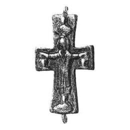

Catalog › CE-0227 · KOR2003-I.1.10
Valvă de față de encolpion în relief cu Răstignire, adstanți și sfinți
sec. X–XII (901–1200) · Rjișciv, regiunea Kiev (raionul Kaharlîk), Ucraina · Muzeul Național de Istorie al Ucrainei, Kiev, inv. В-4580/5 (12291, 57652)
single valve of a reliquary cross, bronz; c. X–XII (901–1200); found at Rjișciv, regiunea Kiev (raionul Kaharlîk), Ucraina; kept at Muzeul Național de Istorie al Ucrainei, Kiev.


Identificare
- Categorie
- Valvă izolată
- Material
- Bronz
- Tehnică
- Turnare în relief
- Dimensiuni
- Î 65 × L 40 × Gr 3 mm
Iconografie
- Avers
- Neidentificat
- Descriere avers
- Valvă de față de encolpion în relief, cu capete drepte, lărgite; capătul de jos este mai lung decât cel de sus. Imaginile de pe exterior sunt foarte frecate. Suprafața interioară a valvei este netedă, cu urme ale tehnologiei de turnare. Pe exterior, în centrul crucii, Răstignirea. Pe capetele laterale, sub mâinile Mântuitorului, imagini până la umeri ale adstanților; sus și jos, imagini frontale, până la brâu, ale unor sfinți. Toate figurile sunt în relief. Pe exterior, pe conturul valvei, o încadrare sub forma unei linii în relief (ca o bordură).
Datare și atribuire
- Datare
- sec. X–XII (901–1200)
- Centru
- Necunoscut
- Tipologie
- Korzukhina–Peskova 2003, tip I 1
Descoperire
- Localitate
- Rjișciv
- Regiune
- regiunea Kiev (raionul Kaharlîk)
- Țară
- Ucraina
- Context
- Necunoscut
Păstrare și referințe
- Colecție
- Muzeul Național de Istorie al Ucrainei, Kiev
- Nr. inventar
- В-4580/5 (12291, 57652)
- Bibliografie
- G. F. Korzukhina, A. A. Peskova, Древнерусские энколпионы. Нагрудные кресты-реликварии XI–XIII вв., Sankt-Petersburg, 2003 [Korzukhina–Peskova 2003], p. 46, cat. nr. I 1/10, reprodusă la Табл. 3 (planșe, p. 245).
- Figura
- Табл. 3
- Planșe
- Korzukhina–Peskova 2003, Табл. 3 (planșă fără paginație proprie în PDF; p. 245 tipărită)
- Observații
- Datare după Peskova: sec. X–XII. Circumstanțe: Împrejurările și data descoperirii necunoscute. Proveniență în colecție: din colecția V. V. Hvoika. Veșmântul lui Hristos în Răstignire nu este specificat. Coordonate: nu sunt date în sursă.
Citare: Corpus Encolpiorum, CE-0227, Valvă de față de encolpion în relief cu Răstignire, adstanți și sfinți, https://vitaliejosanu1979-ux.github.io/primul-meu-proiect/piese/KOR2003-I.1.10/ (accesat 2026-10-17).